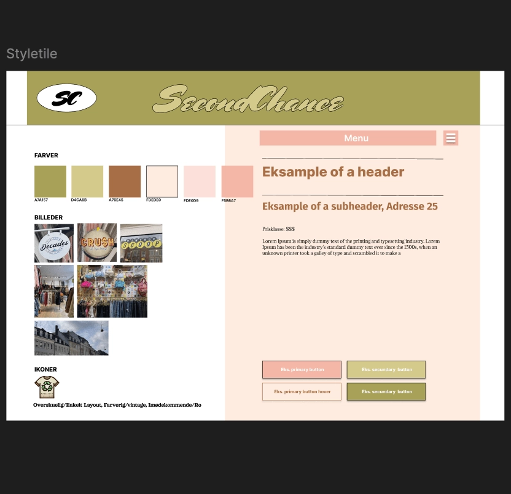
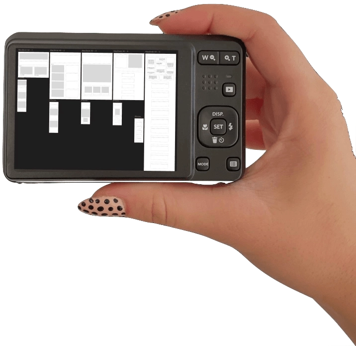
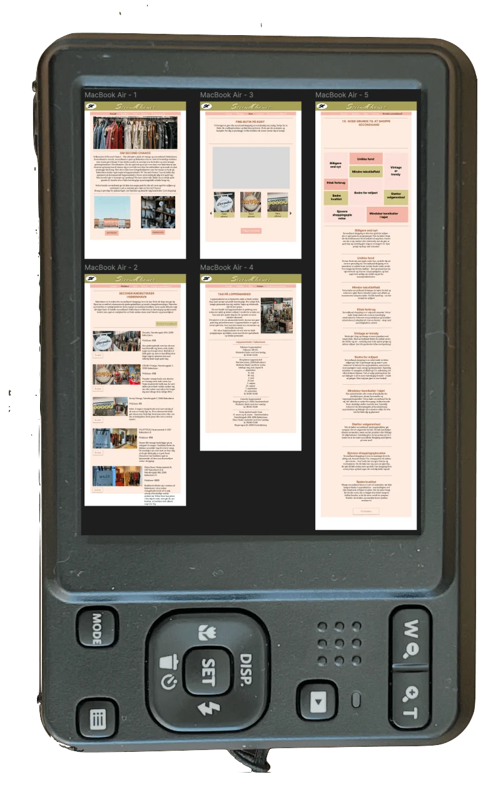
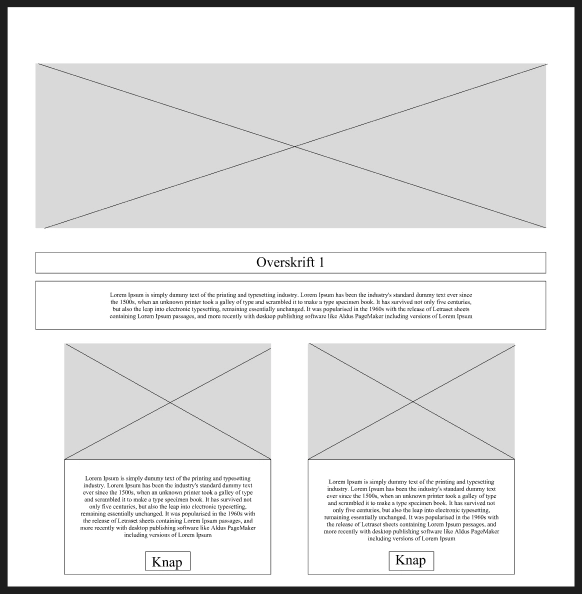

TEMA 3
Grundlæggende UX/UI
Mangler titel
Dette forløb handlede om samspillet mellem UX (User Experince Design) og UI (User Interface). Disse to begreber går nemlig hånd i hånd under udviklingen af et digitalt produkt. Vi lærte at planlægge design i Figma, herunder at indsamle inspiration, ideudvikle, lave styletile og prototyper samt hvordan man kan brugerteste sine digitale prototyper og sine færdige projekter. Vi havde fokus på brugerforståelse og fik for første gang præsenteret Javascript, som blev brugt til at lave menu.
Min første hjemmeside
Vi fik til opgave at kode og designe en hjemmeside som skulle tage udgangspunkt i en af vores interesser - hvilket var mega fedt. Vi lavede deskresearch, wireframes, prototyper og testede dem af på hinanden. Vi skulle selv indsamle billeder og fomulere tekst til vores site. Til slut skulle vi valuere hinadens sites i form af en heuristisk evaluering og til slut præsentere hele vores proces og færdige site for en underviser og en gruppe af klassekameraterne.
 